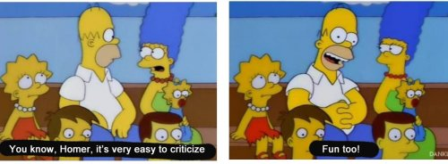

They want me to know of their displeasure. With me.
I don’t make eye contact, I am obviously fearful, I don’t look happy, I am too invested and too quick to interrupt, I clearly have problems.
All of which I get.
After all, our sessions often veer into some form of, We are not what we think we are, territory.
And one of the fun things the mind does, when it begins to see its own nothingness and non-existence, is look around for something that it can point at it and say, “There! I have a problem with that!”
In this case, moi.
They want to make I-contact.
All while we’re seeing together that there isn’t one.
So cue the judgments. Those delightful opinions about others that seem to affirm our own rightness in the world. our own place in the world, our point, our location.
“Here I am. The one who knows things, the one who’s right, the one who disapproves of you.”
What a great way to reify the self, while appearing to be talking about someone else.
And then just to seal the deal, judgments come with feelings. Irritation, jealousy, smug superiority.
Sometimes there’s shame too. I mean, everyone knows we’re not supposed to judge; we’re supposed to love, to never have unloving thoughts towards others. And here we are, judging. Shameful.
So we try not to. Sort of.
And of course, we fail.
Because not-judging can’t be done.
Because the mind wants to be center stage at all times.
To do that, it has to judge what is not itself.
And also what is itself.
After all, it’s not as if we let ourselves of the hook, is it? No, most often we’re particularly cruel towards our own self.
While pretending we are a reliable and accurate evaluator.
Of existence.
We- the smaller- obsessed and compelled to evaluate and rate-
Existence, the larger.
Yeah that's not humorous at all.
“Ok now listen up, existence, you may blend all this into one seamless experience made of infinite colors, shapes, sounds and sensations. But I, I, am going to arbitrarily create and perceive a separate Me and a separate Them and thereby exert my power. Over you, existence. Bwahahahaha.”
I mean, do we even hear ourselves?
Meanwhile, does existence, consciousness, the universe- whatever the name of choice- evaluate us?
There is zero indication this is so.
Since it would only be judging itself.
Since it is already everything.
Including all of us wacky humans, and our unavoidable judgments.
So it is already experiencing itself
with the absolute opposite of disapproval.
And I-contact is already
all there is.
every week.
"Are you going to wear your hair like THAT?" -- my mom
